Office US fanpage — with a little love for Pam Beesly.

Jim Halpert
Master of pranks, king of side-eyes.
If sarcasm were a sport, he'd have gold medals.
Basically the human form of "really?".
“Bears. Beets. Battlestar Galactica.”
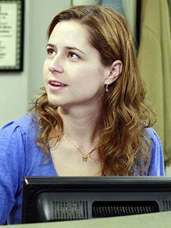
Pam Beesly
Sweet, talented, and the heart of the office.
Master of quiet strength and doodle therapy.
Teapot origin story queen.
“I feel God in this Chili’s tonight.”

Michael Scott
Regional Manager, World's Best Boss (self-declared).
A chaotic mix of clueless and heartfelt.
Makes cringe into comedy gold.
“That's what she said.”
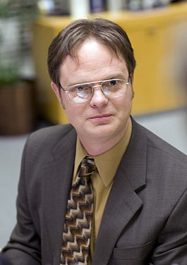
Dwight Schrute
Beet farmer. Assistant *to* the Regional Manager.
Lives by logic, loyalty, and karate.
A warrior of weird and pride of Schrute Farms.
“Identity theft is not a joke, Jim!”
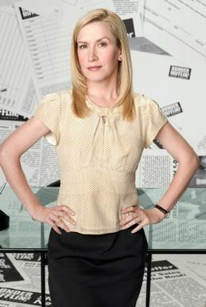
Angela Martin
Cat mom. Serious face. Secret chaos.
Judgy but somehow always in the drama.
Wears beige like armor.
“I don't back down. My sister and I used to be best friends… and we haven't talked in 16 years.”
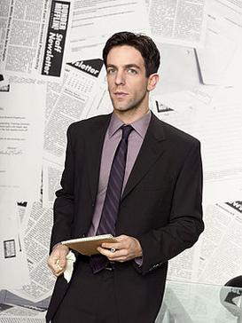
Ryan Howard
Intern turned VP turned fire hazard.
Wears ambition like cologne, strong and obnoxious.
Definitely started the fire.
“I'm like a 30-year-old prodigy.”
Kelly Kapoor
Drama queen with a PhD in pop culture.
Fast talker, fashion diva, total chaos.
Every moment is her moment.
“Who says exactly what they're thinking? What kind of game is that?”
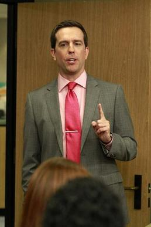
Andy Bernard
Cornell guy. A cappella addict. Anger issues?
Craves approval like Dwight craves authority.
Somehow both lovable and cringe.
“Rit-dit-dit-doo!”
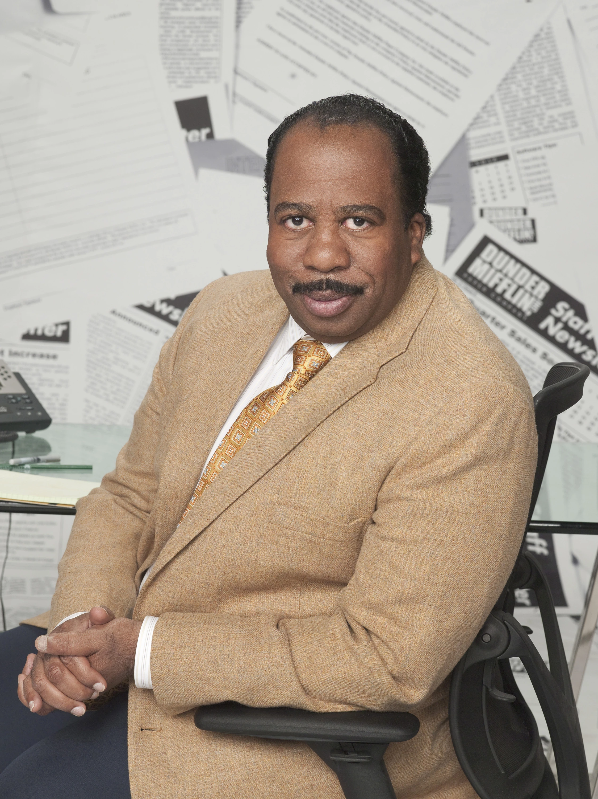
Stanley Hudson
Does not play. Hates meetings, loves crosswords.
Florida dreamer trapped in Scranton.
Works just hard enough to retire early.
“Did I stutter?”
Phyllis Vance
Sweater queen with a savage streak.
Sweet… until she’s not.
Knows everyone's secrets, uses them gently.
“Close your mouth, sweetie. You look like a trout.”
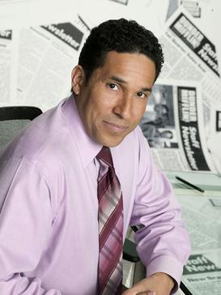
Oscar Martinez
Voice of reason in a sea of clowns.
Smart, logical, always slightly annoyed.
The accountant who explains things… a lot.
“Actually...”
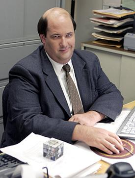
Kevin Malone
Loves chili, drums, and very simple math.
Pure heart, chaotic brain.
Smiles through snacks and bad decisions.
“Why waste time say lot word when few word do trick?”
Creed Bratton
Identity unclear. Possibly illegal.
Might have been in a cult. Maybe still is.
The chaos NPC of Dunder Mifflin.
“If I can’t scuba, then what’s this all been about?”
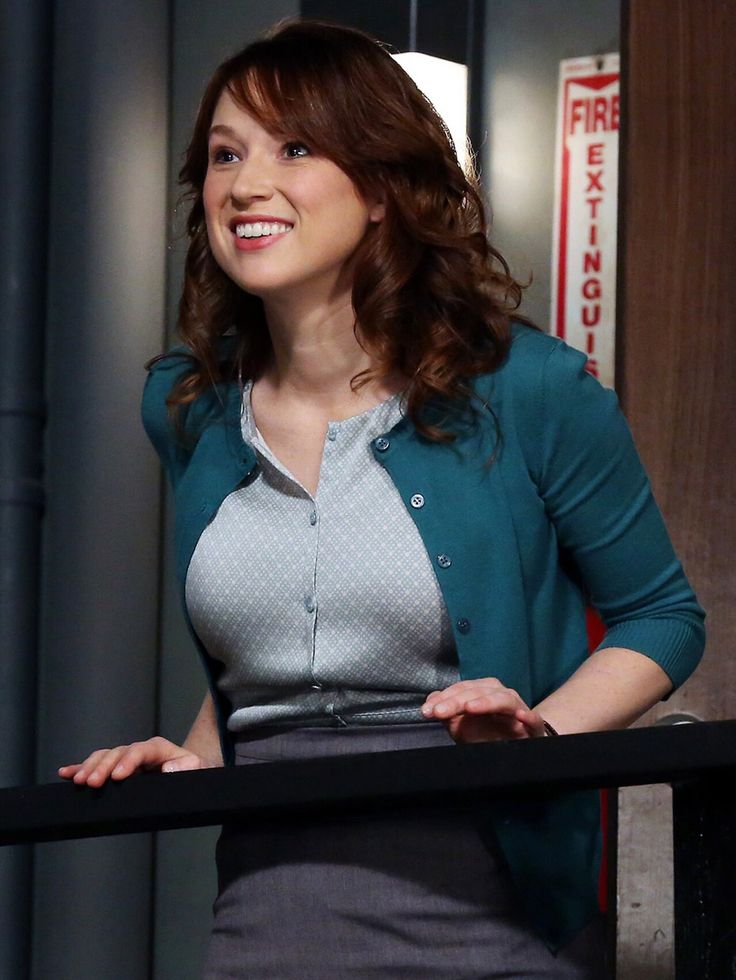
Erin Hannon
Sunshine with a side of confusion.
Tries her best, often misses the point.
Endearing chaos in human form.
“Planking is one of those things where, hey, you either get it or you don’t.”
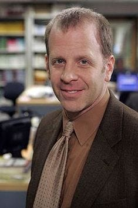
Toby Flenderson
HR rep no one respects (especially Michael).
Quiet, awkward, and lowkey tragic.
Somehow always in the wrong place.
“Actually, I’m in HR, so I’m not technically a part of the party planning committee.”
Jan Levinson
Boss turned wild card turned candle mogul.
Once corporate, now chaotic neutral.
Her relationship with Michael? Therapy-worthy.
“I am the devil.”
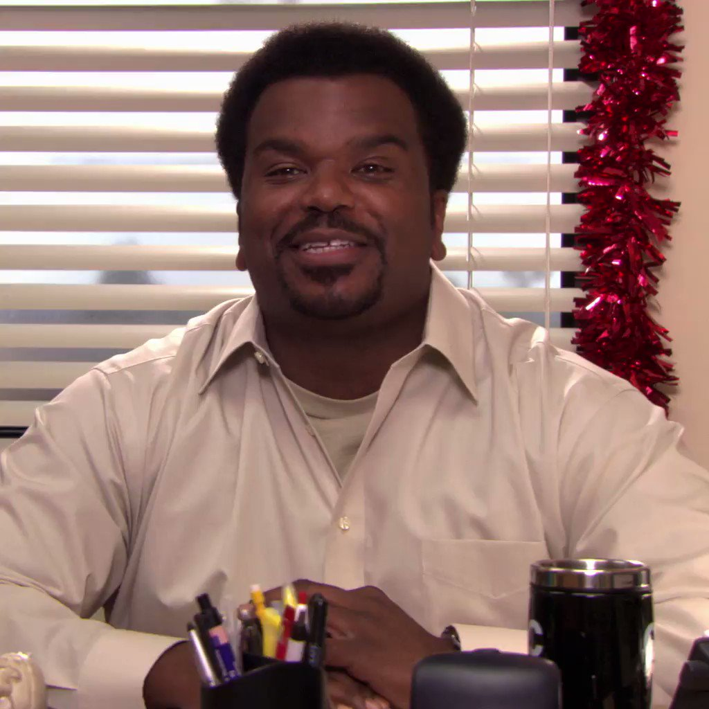
Darryl Philbin
Warehouse boss turned upstairs MVP.
Calm, collected, and secretly wise.
Has the chill everyone else wishes they had.
“You need to access your uncrazy side.”
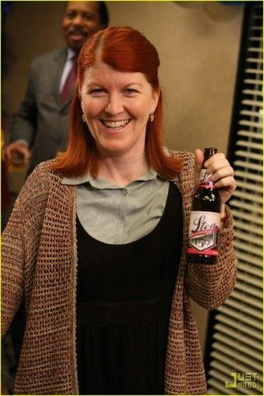
Meredith Palmer
Alcohol enthusiast, HR’s worst nightmare.
Somehow always injured, yet unstoppable.
The wildest card in the office deck.
“I've had two men fight over me before... usually it's because they’re arguing whether I’m alive or not.”